| You may not know this about me, but I have a
thing about bear grass. I really love bear grass. I don't know
why, but I get really excited about the short season when it blooms each
year. One Saturday Buddy and I headed up Graves Creek road into the
Ten Lakes Recreation area near Eureka to see some bear grass and stretch
our legs. |
|
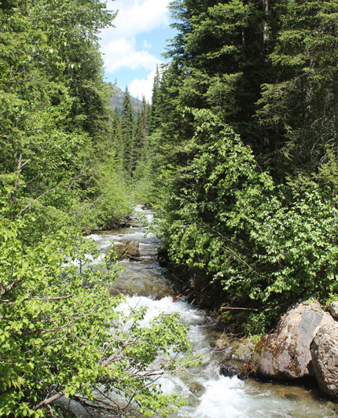 |
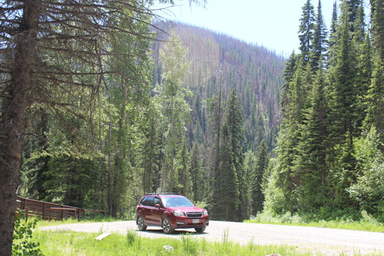 My Subaru looked so at home in this scene, I thought I'd take a picture of it. |
| Stopping at a bridge on the way up. | |
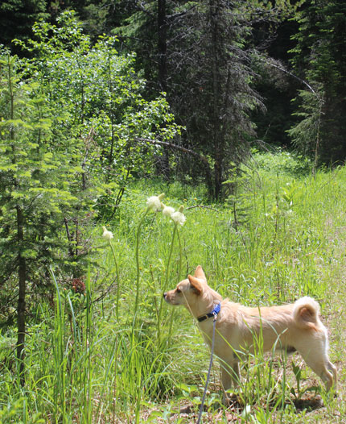 Two of my favorite things - Buddy & bear grass! |
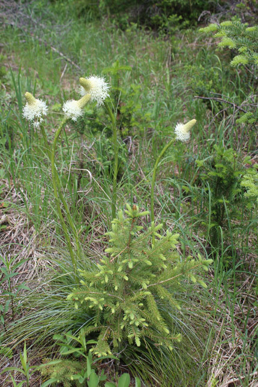 |
| The first of the bear grass we found. There was more as we went higher into the mountains. | |
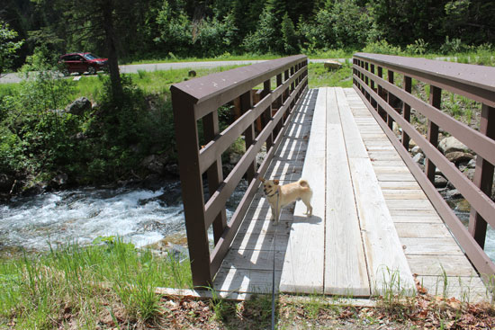 Buddy, checking out the bridge for me. |
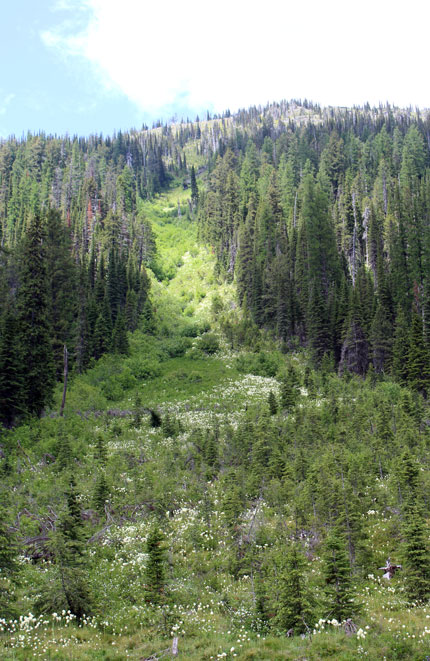 |
| Bear grass galore in this old avalanche slide. | |
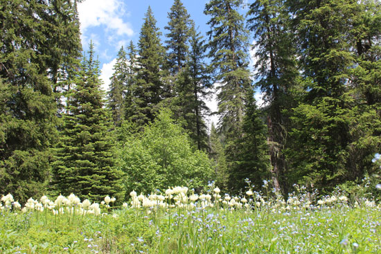 |
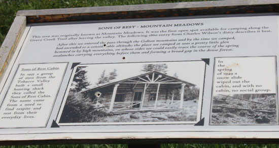 |
| I was being greedy - trying to capture the purple flowers, bear grass,
trees, and sky. It was a little more than my photography skills would allow, but you get the idea. |
Interesting information about early use of the area, if you can read it at
this size. |
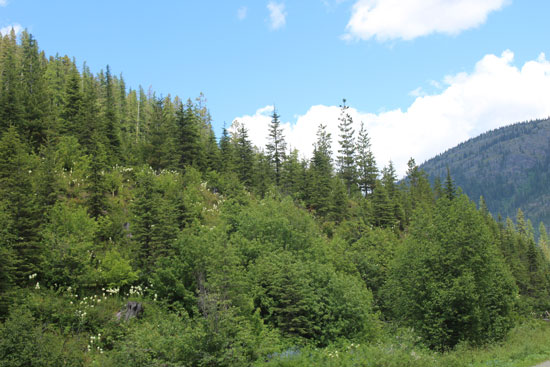 Bear grass up the hillside |
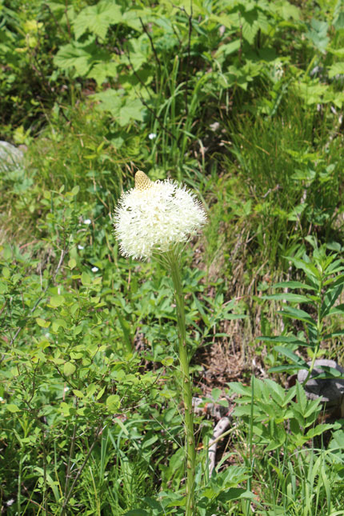 |
| Close up | |
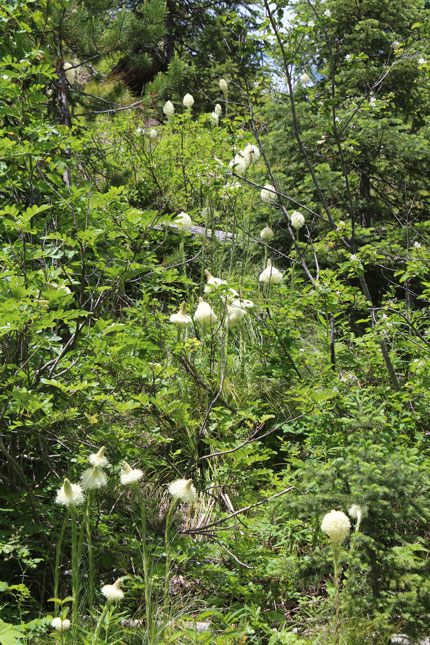 |
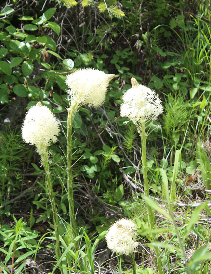 This is my favorite bear grass picture of this outing, I saved the best for last! |
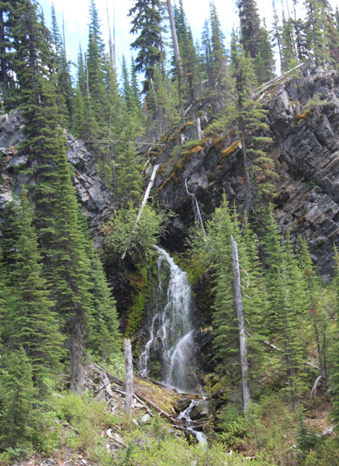 |
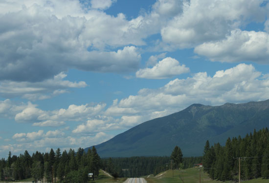 Driving back into Eureka on this lovely day. |
| Lovely falls along the road | |